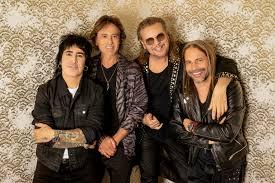

What is Pop-Rock Music?
Pop-Rock is a genre that blends the catchy hooks and melodies of pop with the energy, instrumentation, and attitude of rock music. It emerged in the 1960s and evolved as a commercially friendly form of rock, emphasizing strong choruses, emotional lyrics, and a polished production. Pop-Rock often borrows elements from various rock subgenres while maintaining accessibility for mainstream audiences. Let’s explore the genre across three cultural spheres: English-language, Latin American, and Spanish-language Pop-Rock.
Pop-Rock in English
Coldplay
A British band known for emotional anthems and evolving soundscapes, Coldplay has bridged pop and alternative rock with global success.
- A Rush of Blood to the Head (“The Scientist”, “Clocks”)
- Viva la Vida or Death and All His Friends (“Viva la Vida”)
- Music of the Spheres (“My Universe”, “Higher Power”)
Paramore
Originally a pop-punk/emo band, Paramore gradually shifted into pop-rock and alternative pop territory, known for powerful vocals and dynamic rhythms.
- Riot! (“Misery Business”)
- Paramore (“Ain’t It Fun”)
- This Is Why (“This Is Why”)
Maroon 5

Fusing funk, rock, and pop, Maroon 5 became one of the most commercially successful pop-rock bands.
- Songs About Jane (“This Love”, “She Will Be Loved”)
- Overexposed (“Payphone”, “One More Night”)
- Red Pill Blues (“Girls Like You”)
Latin Pop-Rock
Maná

A legendary Latin rock band with a melodic, romantic pop-rock style and wide influence across the Spanish-speaking world.
- ¿Dónde Jugarán los Niños? (“Oye Mi Amor”, “Vivir Sin Aire”)
- Sueños Líquidos (“Clavado en un Bar”)
- Drama y Luz (“Lluvia al Corazón”)
Juanes
A solo artist who blends pop-rock with traditional Colombian rhythms and heartfelt lyrics.
- Un Día Normal (“A Dios le Pido”, “Es Por Ti”)
- La Vida... Es un Ratico (“Me Enamora”)
- Más Futuro que Pasado (“Pa' Dentro”)
Natalia Lafourcade

Originally rooted in pop-rock, she later explored folk and Latin genres, but her early works reflect strong pop-rock foundations.
- Casa (“En el 2000”, “Buscarte”)
- Natalia Lafourcade (“Elefantes”)
Pop-Rock in Spanish
La Oreja de Van Gogh

One of the most iconic Spanish pop-rock bands, known for poetic lyrics and melodic choruses.
- El Viaje de Copperpot (“La Playa”, “París”)
- Guapa (“Muñeca de Trapo”)
- Cometas por el Cielo (“La Niña que Llora en tus Fiestas”)
Amaral
A Zaragoza-based duo blending introspective songwriting with rich pop-rock textures.
- Estrella de Mar (“Sin Ti No Soy Nada”)
- Pájaros en la Cabeza (“Días de Verano”)
- Nocturnal (“Llévame Muy Lejos”)
El Canto del Loco

A high-energy band that defined Spanish pop-rock in the early 2000s with catchy and emotive songs.
- Estados de Ánimo (“Besos”, “Volverá”)
- Zapatillas (“Zapatillas”, “Eres Tonto”)
- Personas (“Peter Pan”)